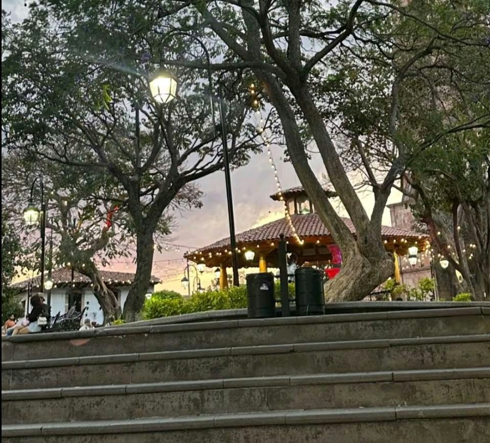
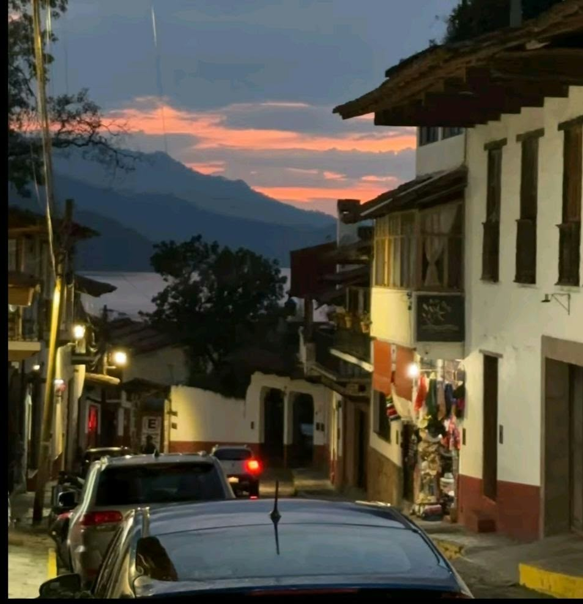
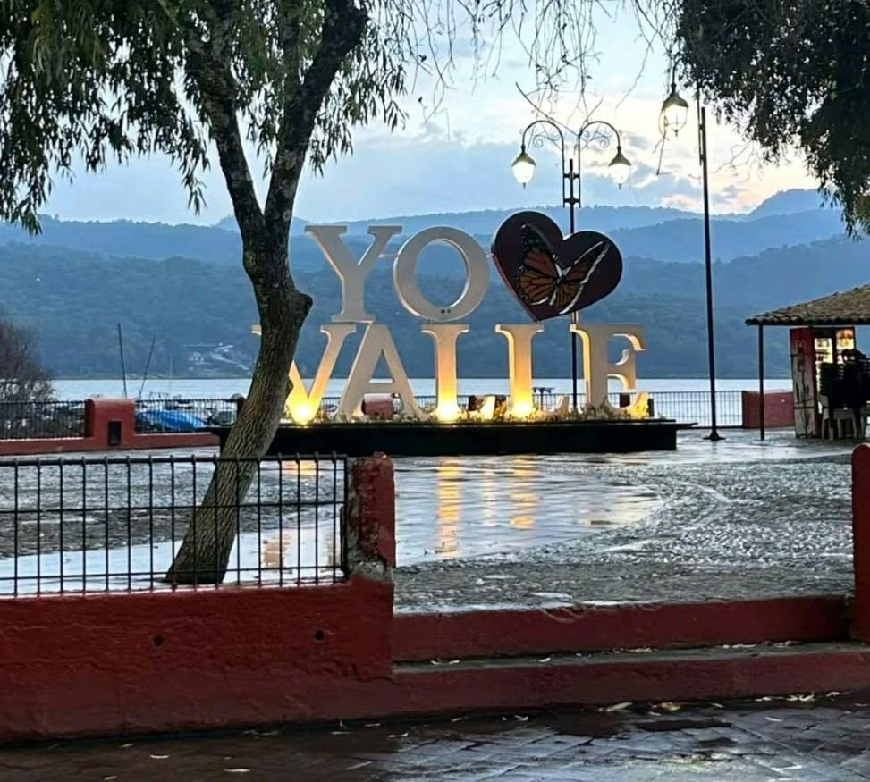
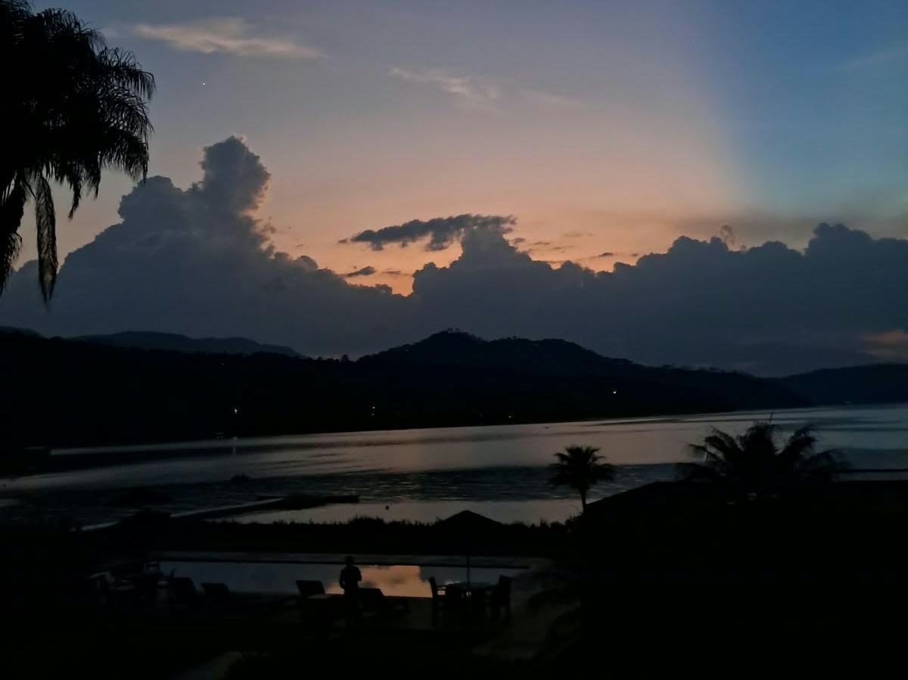

Un pedazito de nuestro municipio
Descubriendo la historia, cultura y belleza...

El embarcadero
Este lugar se encuentra dentro de la presa municipal Miguel Aleman en Valle de Bravo

El jardin
Ubicada en la parte central del municipio

Calle empedrada al atardecer
La calle sigue un estilo rustico, con las fachadas de casas iguales que le da un estilo especial

Iglesia de San Franscisco de Asis
Ubicada a un costado del jardin municipal

Letrero de valle de bravo
Se encuentra dentro de el muelle de Valle de Bravo a unos cuantos metros del cine municipal

Laguna
Ubicada en dentro de la presa Miguel Aleman